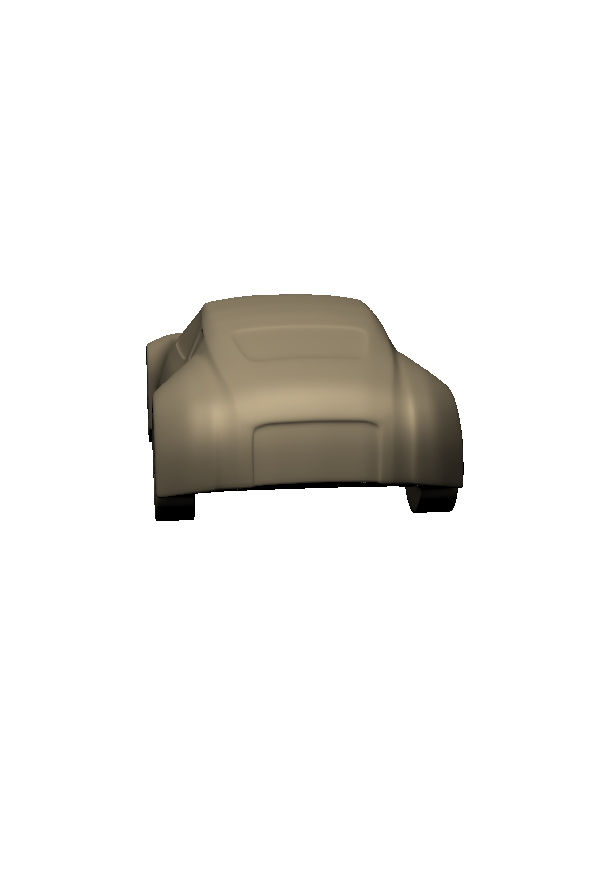

Lexus of North America began building sportier cars in the early 2010s. Their goal was to retain current customers, while reducing the average age of owners by gaining new, young customers. Lexus of North America needed a commercial to represent both of their target audiences. They decided an animated commercial would best suit their needs.
I decided to start by creating two fictional characters. One is a young man, named David, and the other is an elderly woman, named Betty. Both Betty and David drive a Lexus, but their driving habits are vastly different. I thought this idea would represent the range of options that Lexus offers, as well as the wide range of customers it represents.
This animation required a 3-dimensional vehicle. I found and utilized an open-source 3-dimensional car for time and budget purposes. I colored David's car red and Betty's car beige. The models are shown below.
The animation required multiple angles for the vehicle's to be oriented. I used Photoshop to accomplish the color and angle changes before placing the models into After Effects. These angle alterations are shown below. Once the models were complete, I was able to accomplish the final product in After Effects. The final commercial is shown at the bottom of the page.
This project was accomplished using Adobe After Effects and Photoshop.